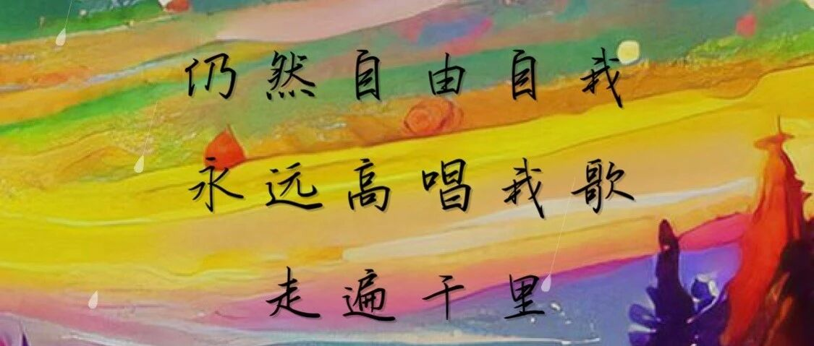

永远高唱我歌 - 写在微信公众号粉丝1100之际

题图byQQ音乐 AIGC生成《海阔天空》
看了看2021年8月粉丝破千，两年了，上个月粉丝多了100个人，哈哈哈哈。本来觉得1000以后就不写了，但是这两年对我来说，确实又是挺重要的两年，所以，还是写写吧。
2021年5月，我从一份工作了12年的公司离职，跨行跨界到了现在的公司。工作经历非常简单，四大+in-house+SaaS（被人纠正互联网和SaaS不是一个行业哈哈哈）。
烘焙陪我度过了比较漫长的职业上升期、缓冲期、倦怠期和重新迈出新一步的重要阶段。怎么说呢？好像你在现实生活中遇到的事情，都会随着那些面团的发酵，饼干的膨胀，甜点的滋味，渗透到你的身心，让你不得不有耐心，不得不沉浸，不得不专注在这一件事情上，可能这就是烘焙的魅力吧。
讲真，确实低估了跳槽的难度，从我本心来说，我感觉近期才有了“适应了这份工作”的感觉，差不多18个月，可能是我要求太高，也可能是我太过慢热，也可能长时间的稳定以后，不适应因为不确定带来的焦虑。这种感觉怎么形容呢？就是你在烘焙的过程中，你在尝试新品的时候，每一个阶段都要check一下配料表，每一个节点都要看看示例的图片，可能并不是每一步都讲的那么清晰，也可能每一步都需要你的适当判断，当成品一点点呈现出来的时候，你才能够知晓：哦，原来，当时，我做对了。
又回头看了看我以前写的每个阶段的文字，确实是我这些年的心路历程和成长记录，人说四十不惑，我也不知道到底是应该参悟什么，但是现在的我，确实比两年前的自己更加关注享受过程，而不是只关心结果。虽然以前也这么说，但是心理上的认可确实还是最近才开始的。越来越多的时候会和自己以及同事说：Enjoy这个过程，都是体验，等等。确实，当你身在其中，又心在高处，所见所得，自然不同。
这些是烘焙带来的有条不紊的耐心，以及对自己纵然有期待，但也深知更需要时间等待，才能看到结果的信心。
由衷地祝福和希望自己、在看这篇文章和关注我公号的朋友们，也一起拥有这样的耐心和信心，可以“永远高唱我歌，走遍千里”。